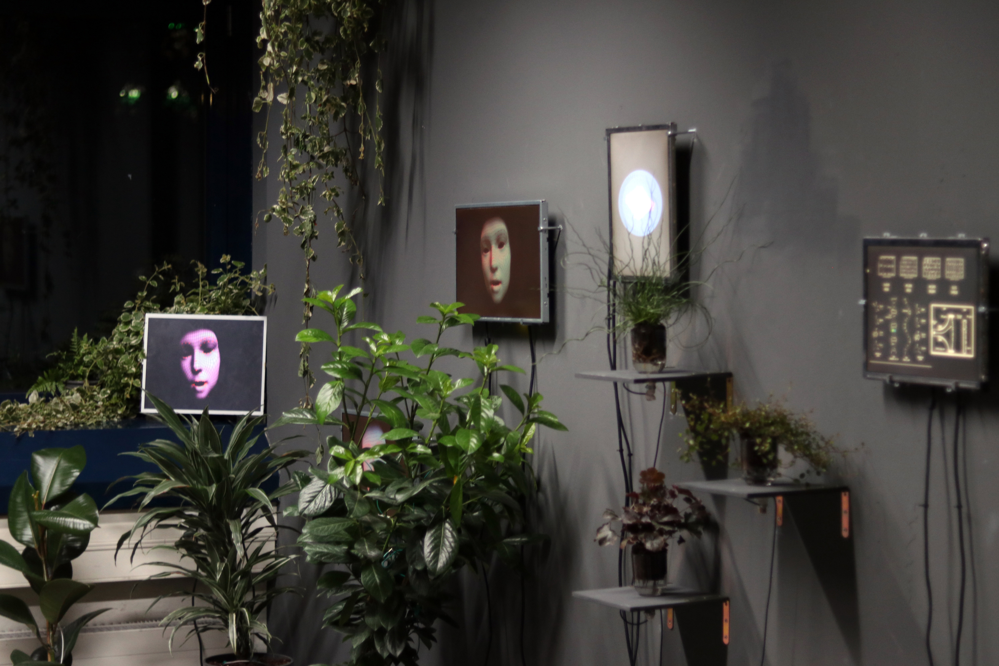

|
|
G R O W I N G O U T O F U N N A T U R A L [ 2 0 1 9 ] Director del Programa/ Curador: Moisés Mañas (ES)
Tenemos la misma imagen mental para la palabra "Mundo" y la palabra "Tierra".
El mundo es una construcción cultural y la Tierra es el soporte físico donde se encuentra este mundo.
|
|
G R O W I N G O U T O F U N N A T U R A L [ 2 0 1 9 ] Program director/ Curator: Moisés Mañas (ES)
We have the same mental image for the word “World” and the word “Earth.”
The world is a cultural construct and the Earth is the physical support where this world is located.
|
|
|
|
I N S E C T A N E W M E D I A [ 2 0 1 9 ] Artistas:
Esta instalación interactiva propone una simbiosis entre tecnología obsoleta
y entorno natural, como aproximación a un mundo futuro distópico.
Un grupo de objetos escultóricos compuestos por plantas y residuos tecnológicos,
un dispositivo de proyección multipantalla, un códice tecnológico y un catálogo
descriptivo crean este proyecto multimedia no muerto.
|
|
I N S E C T A N E W M E D I A [ 2 0 1 9 ] Artists:
This interactive installation proposes a symbiosis between obsolete technology
and natural environment, as an approach to a dystopian future world.
A group of sculptural objects composed by plants and technological waste,
a multi-screen projection device, a technological codex and a descriptive
catalogue creates this undead multimedia project.
|
|

